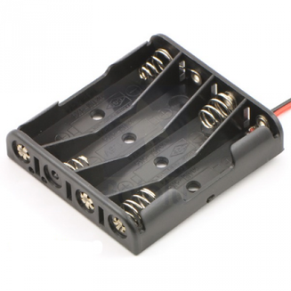

Use clear resin to make an LED cube.
As the title indicates, this is my second version of making a LED resin cube. The
original version
worked well, however there were so many good ideas posted on how to improve it that I decided to make another, (hopefully improved) version.
The main issue that I had with the original was how the batteries were charged.
I used a female jack to charge up the batteries.
This took away some of the aesthetic of the finished product and definitely wasn’t the best way to charge the batteries.
The new one has a charging station and the resin cube is totally enclosed.
In the comment section for the original LED cube, Instructable user -
Wesley666
suggested using a “wireless recharging system” which works on induction, the same way that some electric toothbrushes work. I thought this was a great idea and purchased
this one
which another Instructable user –
offtherails2010
suggested.
This version of the resin cube is a little bigger, but the finished product works a treat.
Hope you enjoy.
Here’s a video of it working:
If the above doesn't work try this:
Clip



Material
I purchased mine from the local hardware store
I used a baking soda container that I found at my local supermarket. You could use virtually any shape mould you like as long as it's plastic.
Ebay
The circuit board is from a fiber optic toy which I pulled apart.
Ebay
Again you could use any colours you want.
Ebay
purchase here
(this one is a 9V charger), or
Ebay
(this one is a 5V charger)
Ebay
Ebay
Tools


Initially I used copper wire and made battery holders out of the wire (image below).
The problem was that you had to add heat to the end of the battery to add some solder and this kept on ruining the batteries.
I didn't want to add a lot of plastic to the design but in the end I compromised.
Steps:
Modding the battery holder


Copper Frame
Next is to make a frame out of copper wire. Without this the batteries will keep on falling out.


This step isn't relly necessary but it will make the finished product look a tonne better.
Steps:


The next thing to do is to attach your charging coil to each end of the battery terminals.
There are a couple of different charging coils available.
I decided to go with the 9v one as it gives me more options in regards to voltage.
The 5v would work ok if you were only using 3 AAA batteries.
When you are charging batteries you want the voltage higher than the actual voltage of the batteries.
Steps:
• At this stage I tested the coli by running the batteries down and then hooking the other coil up to my phone charger to see if everything worked ok.


In my last version, I didn’t move the LED’s on the circuit board, but this time I wanted to move the LED’s away from the battery, charger and circuit board so they would look like they were suspended in the resin.
Steps:
Romove the Circuit borad from the plastic
Adding the LED’s


Adding the Mercury Switch
1.Remove both wires for the switch by de-soldering them.
Attaching the Circuit Board to the Batteries
Remember how you attached the copper battery holder to the positive end of the batteries?
Well the reason why is so the circuit board can be attached to the positive end of the batteries.
I have found that if you solder to the negative end of the circuit board, then for some odd reason the board seems to short somewhere and it won’t work anymore!
This could be just me though.


Hopefully now you have a working, LED’s which only come on when you tip everything on it’s side.
Each time you tip it over it should change colours.
If it doesn’t then you will need to go and check all of your connections to make sure that everything is soldered correctly.
The worst thing that can happen (believe me I know!) is for the circuit board to short and not work. If this happens, then I’m afraid it’s time to remove it and replace with another one.
The next step is to add the LED’s into the resin.
Steps:


Once the resin is completely dry it’s time to polish it.
In my first LED Resin Instructable I went through in detail on how to polish the resin and what materials to use.
I’m going to be really lazy here and ask you to look at
step 6 “Smoothing and Finishing
” on the other Instructable for how to polish the resin. The only other info I would like to add is below:
Finishing:
Once you get the resin out of the mould (might need a little coxing!) you can determine how much sanding it will need.
The mould I used was very smooth so I only had to sand back the top a little and used some Brasso to finish it off.
You can also use car polisher before the Brasso as it is slightly more abrasive and should help to get any scratches out.


Now that you have finished your LED Resin Cube you will need a docking station to enable to charge it up.
Steps:
.


Ok – so now you should have a pretty substantial LED Resin Cube with its very own docking station.
One thing to remember is not to charge for really long periods.
The batteries will need about 2-3 hours to charge, you wouldn’t want to leave them there overnight as they could get pretty hot.
I was in 2 minds about making the resin cube translucid by lightly sandpapering it. The LED light is better diffused. In the end I decided to keep it clear as it shows the insides really well.
If I ever do make another one of these I think I’ll use a super cap and attach a charging coil to it. This way I could keep the size the cube down while keeping the insides of the cube to a minimum.
This cube is better constructed than the first one and I think look better too.
Adding solder to batteries isn’t too clever as I discovered when one of the batteries started to smoke!
I pulled it out of the copper frame and threw it away as quickly as possible but the smoke was very toxic and I couldn’t work in my shed for an hour or so.
Using the plastic battery holder really worked well and I liked how it turned out once I had trimmed all of the excess plastic away.
Cheers.